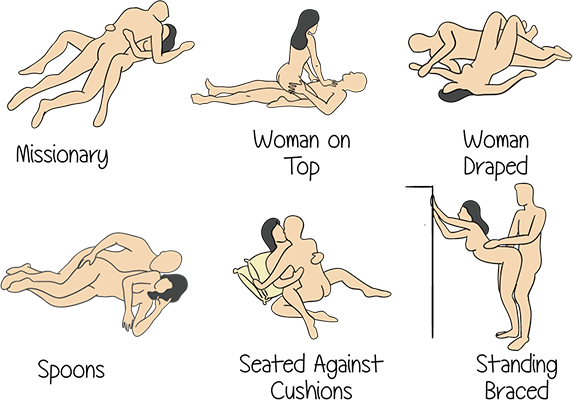
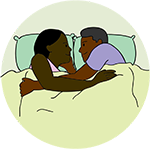

Module: Sexuality and Scleroderma
Elaine A Furst, BSN, MA
 Communication within a relationship is important to the emotional and sexual health of the relationship.
Communication within a relationship is important to the emotional and sexual health of the relationship.
Talking about your likes and dislikes and sharing sensual and sexual desires is important. If you talk, resentment and secrets won’t build up.
Everyone has a different idea about what feels good sexually. It is an important idea that most people seldom discuss with anyone.
Think about your own definition of a successful sex life. Share it with your partner. Ask about your partner’s definition.
Before you got scleroderma, how was your sex life? Perfect? Could have been better? If it wasn’t so good, now is the time to improve it.
If you have coping and adaptation skills that you’ve used to adjust to your disease (such as knowing when to take pain medication, using warm baths for muscle relaxation, knowing when to rest), you can use these same skills to improve your sex life.
Sexiest Part of the Human Body
The sexiest part of the human body is the mind. Think about what you’ve accomplished against great odds. That’s because you put your positive attitude into action.
Prepare yourself
Attitude counts! Start with thoughts, pictures, ideas. Many people start thinking about their intimate encounter the evening or even the day before the “date” to get into the mood.
Orgasm doesn’t have to be the goal of sexual intimacy. One can have intimacy for intimacy’s sake, just because it feels good to be together physically. If it leads to sex, that’s fine. But it is not always necessary.
Use helpful devices for sex just as you use devices to help you in the kitchen, at work, etc. Helpful devices might include pillows under the hips, dildos, or lubricating gels (make sure they have no perfume or alcohol).
Make sure you take all your medicines before sex, especially for pain and GERD, as well as your anti-inflammatory.
Intimacy for intimacy’s sake
Here are some examples that you might try to enjoy yourselves and relieve the pressure of having to have sex:
- Talk with your partner about what turns you on, what worries you about intercourse, and how he/she can turn you on.
- Test various lubricants together.
- Go on a no-pressure, mini-vacation together; no sex, just enjoyment of the hotel or bed and breakfast, taking walks, and eating a nice dinner.
Other examples are listed under the Sensuality section of the module.
Various positions
These pictures show different positions you can try with your partner – you can make up your own too. Share these with your partner. It is informative and could also be a turn-on!
Test the positions together before you try them out in bed, so you can see if they are comfortable for you.
More ways to pleasure yourself and your partner
You need to talk to your partner about these ways of pleasuring each other. One person’s turn on is another’s turn off. Communication is the key. Be creative.
For oral sex, use pillows for a comfortable position. If your mouth doesn’t stretch, use your tongue to good advantage. Your partner can sit on a chair while you kneel.
For masturbation, use lubricating jelly, a pulsating hand-held shower head (the water shouldn’t be too hot), long-handled vibrators, etc.
Mutual masturbation is also an option. Use comfortable positions for both partners, use lubricating jelly, and communicate to your partner the best places to touch and how hard or soft.
Internet resources
There are many resources on the internet. These resources are safe for you to access. However, when going on websites for vibrators and other sex toys you need to choose your site carefully so that you don’t end up on unwanted mailing lists.
Also, you can look up books and pamphlets, as well as products such as vibrators and various other sex toys, lubricating jellies, etc.
You and your partner can also go to adult book stores together and pick out the items you want.
Examples:
http://www.arthritis.org/living-with-arthritis/life-stages/relationships/sex-arthritis.php
Also look up books and pamphlets as well as products such as vibrators and various other sex toys, lubricating jellies, etc.
Book recommendation: Sex for One, by Betty Dodson